ポゼッションポリシー選手一覧
サカつく2026のポゼッションポリシー選手108人（SP選手108人）を掲載。最大総合力、ポジション、プレイスタイル、入手可否などを比較できます。
ポゼッションの選手データ
該当選手数
108
player_master集計
SP選手数
108
区分＝SP選手
関連フォメコン
15
ポリシー一致
最大総合力ランキング TOP10
メインポジション別人数
CF 22人LW 12人RW 7人AM 12人LM 2人RM 3人DM 13人LB 7人RB 6人CB 15人GK 9人
プレイスタイル別人数
ドリブラー 14人ラインブレーカー 12人ストッパー 10人パサー 9人攻撃的FB 9人オーソドックスGK 8人サイドアタッカー 7人セントラルMF 7人アタッカー 6人ポストプレーヤー 6人組立CB 5人ストライカー 4人守備的FB 4人ハードマーカー 3人ワイドストライカー 3人スイーパーGK 1人
ポゼッションの全選手一覧
最大総合力の高い順に掲載しています。国籍・ポジション・プレイスタイル・入手可否で絞り込めます。
108人表示


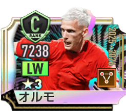
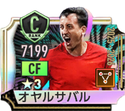
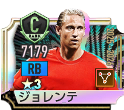
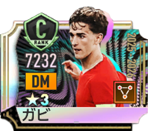
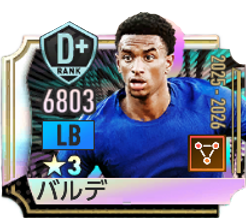


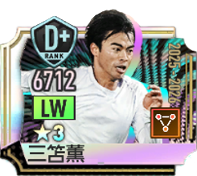


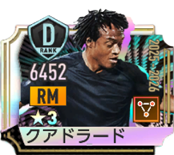
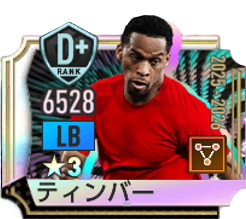


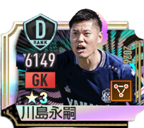
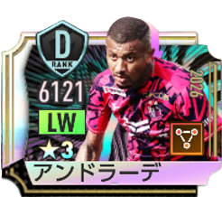
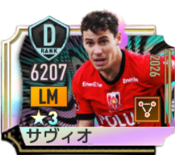


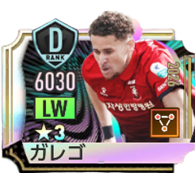
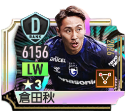
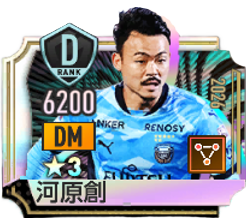


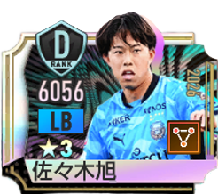


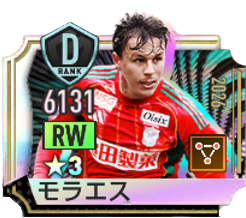


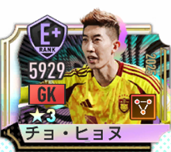


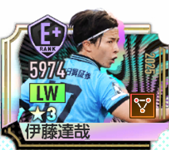
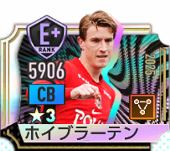

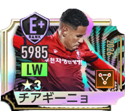
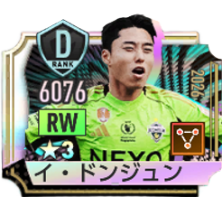


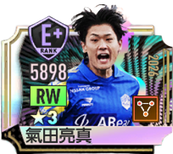
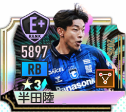
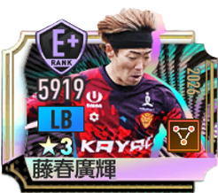
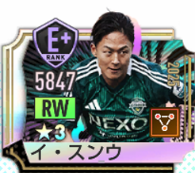


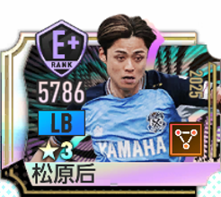
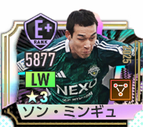


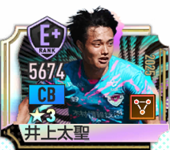
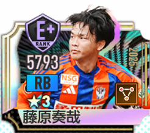

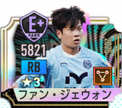
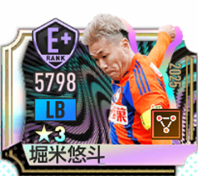
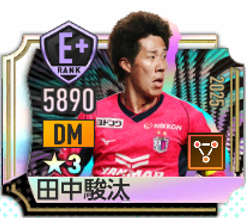


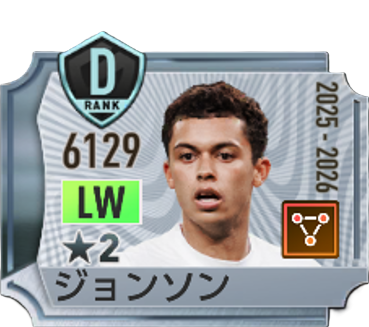

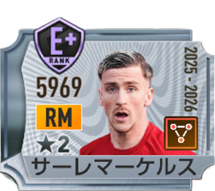
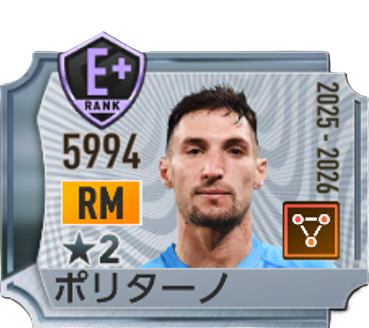
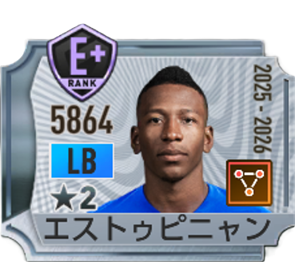
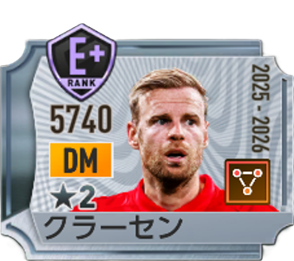

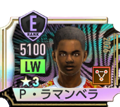
ポゼッションのフォーメーションコンボ
金金ランク
ラ・デア'22
C028
CB / ストッパー LvⅡ以上
RM / ドリブラー LvⅡ以上
CF / ラインブレーカー LvⅢ以上
RM / ドリブラー LvⅡ以上
CF / ラインブレーカー LvⅢ以上
ラ・ロハ'24
C032
RB / 攻撃的FB LvⅡ以上
DM / パサー LvⅡ以上
RW / ドリブラー LvⅢ以上
DM / パサー LvⅡ以上
RW / ドリブラー LvⅢ以上
ロス・カフェテロス'94
C048
CB / ストッパー LvⅡ以上
DM / セントラルMF LvⅢ以上
CF / ストライカー LvⅡ以上
DM / セントラルMF LvⅢ以上
CF / ストライカー LvⅡ以上
ブラウ・グラーナ'15
C054
CB / 組立CB LvⅡ以上
AM / セントラルMF LvⅡ以上
CF / ストライカー LvⅢ以上
AM / セントラルMF LvⅡ以上
CF / ストライカー LvⅢ以上
ラ・ロハ'26
C059
CB / 組立CB LvⅢ以上
LB / 攻撃的FB LvⅡ以上
LW / サイドアタッカー LvⅡ以上
RW / ワイドストライカー LvⅢ以上
LB / 攻撃的FB LvⅡ以上
LW / サイドアタッカー LvⅡ以上
RW / ワイドストライカー LvⅢ以上
銀銀ランク
太極戦士'02
C013
CB / ストッパー LvⅡ以上
LM / ドリブラー LvⅡ以上
LM / ドリブラー LvⅡ以上
ディアブル・ルージュ'18
C015
CB / 組立CB LvⅡ以上
RW / ドリブラー LvⅡ以上
RW / ドリブラー LvⅡ以上
ウルチカ'03
C023
LB / 守備的FB LvⅡ以上
AM / アタッカー LvⅡ以上
CF / ポストプレーヤー LvⅡ以上
AM / アタッカー LvⅡ以上
CF / ポストプレーヤー LvⅡ以上
エル・レオン'70
C036
CB / ストッパー LvⅡ以上
AM / アタッカー LvⅡ以上
LW / ドリブラー LvⅡ以上
AM / アタッカー LvⅡ以上
LW / ドリブラー LvⅡ以上
ラ・ロハ'02
C040
GK / オーソドックスGK LvⅡ以上
CB / ストッパー LvⅡ以上
CF / ラインブレーカー LvⅡ以上
CB / ストッパー LvⅡ以上
CF / ラインブレーカー LvⅡ以上
ヴィオラ'99
C042
GK / オーソドックスGK LvⅡ以上
RB / 攻撃的FB LvⅡ以上
AM / パサー LvⅡ以上
RB / 攻撃的FB LvⅡ以上
AM / パサー LvⅡ以上
ディー・アドラー'24
C050
CB / ストッパー LvⅡ以上
DM / パサー LvⅡ以上
CF / ラインブレーカー LvⅡ以上
DM / パサー LvⅡ以上
CF / ラインブレーカー LvⅡ以上
関連ツール
最終データ更新日：